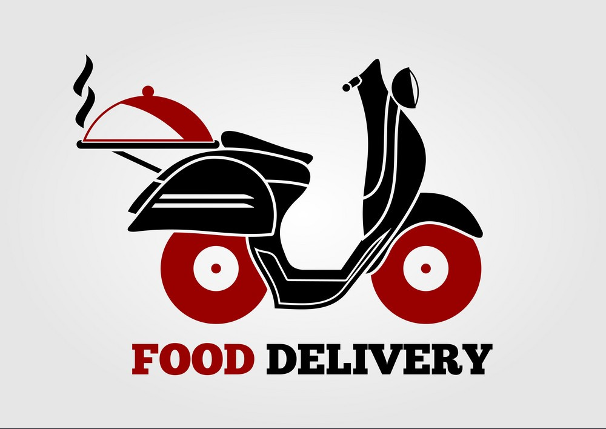
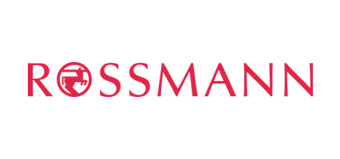
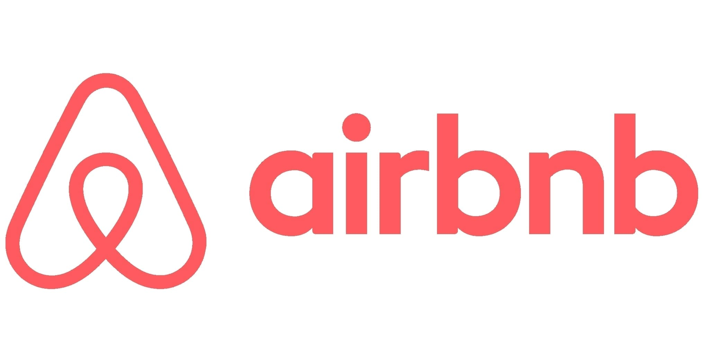

Projetos de estudo desenvolvidos durante a formação em ciência de dados. Demonstram domínio de Python, Machine Learning, Streamlit, deploy e análise exploratória — não representam o núcleo da experiência profissional atual.

Painel Gerencial — Marketplace de Delivery
Dashboard gerencial construído com Streamlit para um marketplace de delivery de comida na Índia. Aplica manipulação de dados com Pandas, lógica de negócio e visualização interativa, com deploy em nuvem.
Python
Pandas
Streamlit
Plotly
GitHub
Ensaio de Machine Learning
Análise comparativa de algoritmos de classificação, regressão e clusterização, explorando overfitting, underfitting e métricas de performance (Accuracy, F1, RMSE, Silhouette Score).
Python
Scikit-learn
Pandas
KNN
Random Forest
XGBoost

Rossmann Sales Forecast
Modelo XGBoost para previsão de vendas diárias das lojas Rossmann para as próximas 6 semanas, com pipeline completo de EDA → treinamento → validação → deploy via API no Telegram.
Python
XGBoost
Scikit-learn
Telegram API
Flask

Airbnb Rio — Previsão de Preços
Modelo de regressão para prever preços de anúncios no Airbnb Rio de Janeiro, com análise comparativa entre ExtraTrees e XGBoost e painel interativo hospedado em nuvem.
Python
XGBoost
ExtraTrees
Streamlit
GitHub